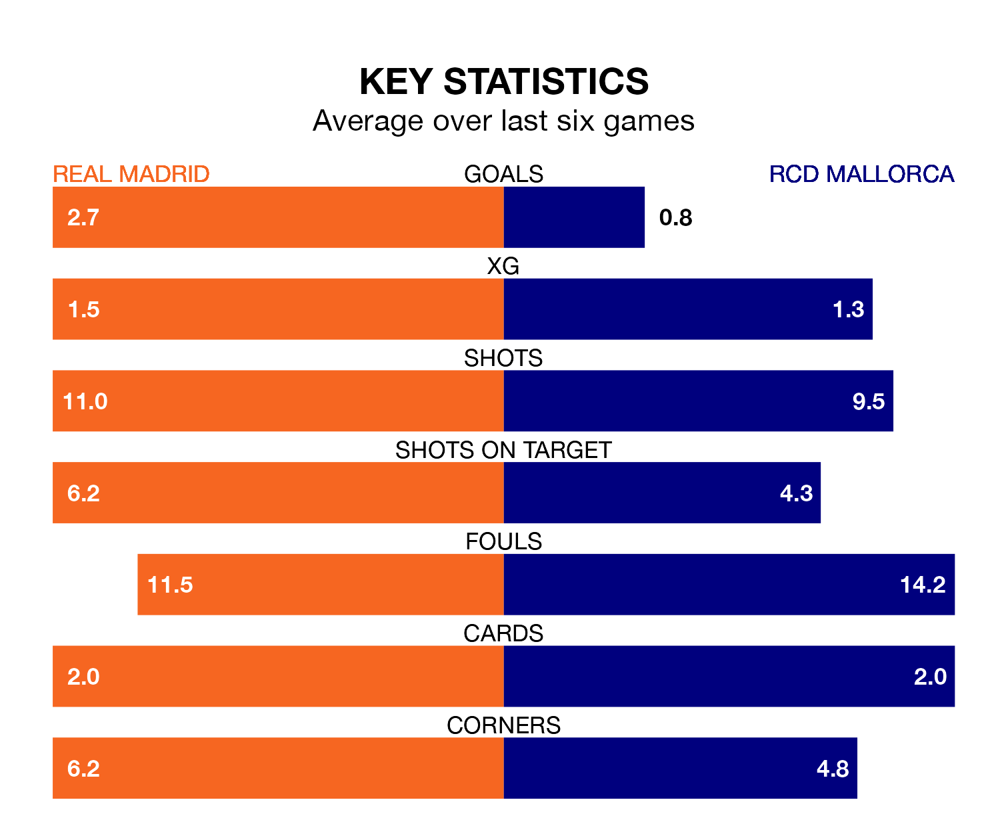

Real Madrid are heavy favourites to keep all three points at home in Wednesday's late kick-off against RCD Mallorca.
Real Madrid, who sit top of La Liga with 18 games played, are priced at 1.2 to seal victory at the Estadio Santiago Bernabéu.
Sitting 13 places and 27 points behind them in the table, Mallorca are 11.0 to win with *Betting Company*, while the draw is at 6.5.
With 39 goals in 18 games so far this season, Madrid are the league's second-highest scorers with 2.2 goals per game. And they are conceding fewer than average, letting in 11 goals at a rate of 0.6 per game.
Mallorca, meanwhile, are below average scorers, with 0.9 goals per game, compared to a league average of 1.3. They have conceded 1.2 goals per game.
In Jude Bellingham, Real Madrid have the league's sharpest shooter so far this season. He has notched 13 goals in 16 appearances.
His goal rate of one every 106 minutes is quicker than that of Abdón Prats, RCD Mallorca's top scorer with a goal every 131 minutes, and a total of five goals in 15 games.
The home side are in fantastic form in La Liga, with five wins and a draw from their last six games.
With two wins and three draws over that period, the visitors' form is much worse – they have taken nine points from 18, compared to Madrid's 16.
In the last 10 years, Madrid and Mallorca have played each other on six occasions. Madrid won four of them and Mallorca two.
On average, Real Madrid scored 2.5 goals and RCD Mallorca 0.7 in those matches.
Their last meeting was on February 5, when Mallorca won 1-0 at home.
Madrid's last match was on December 21, a 1-0 win against Deportivo Alavés, with Lucas Vázquez getting the goal for Real Madrid.
Mallorca beat CA Osasuna 3-2 last time out, also on December 21, with Antonio Raíllo, Dani Rodríguez and Matija Nastasić on the scoresheet.
Wednesday's match will be refereed by Alejandro Muñíz Ruiz, who has taken charge of nine La Liga games so far this season, issuing two red cards and booking 50 players. He has awarded one penalty.
The last Mallorca game Muñíz Ruiz refereed was the 2-2 draw at home against FC Barcelona on September 26. He is yet to oversee a match featuring Madrid this season.
Updated: 12:57, 02/01/24